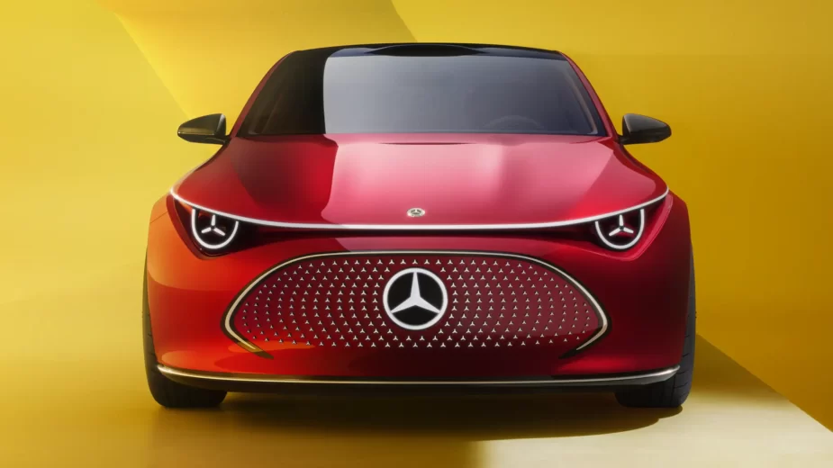

Mercedes não acredita nas baterias de estado sólido. Conheça os motivos
As vantagens das baterias de estado sólido podem ser ultrapassadas pelos desenvolvimentos das baterias de iões de lítio, afirma a Mercedes.

As baterias de estado sólido têm sido anunciadas como a grande promessa para o futuro dos carros elétricos.
Tal deve-se, principalmente, à sua densidade energética muito superior às atuais baterias de iões de lítio (com eletrólito líquido). Uma característica que deverá permitir, para a mesma capacidade, uma bateria fisicamente mais pequena e leve, com óbvias vantagens em matéria de packaging e peso total do veículo.
A Mercedes-Benz, no entanto, parece ter outra perspetiva. Durante o CES 2024, numa mesa redonda, o diretor tecnológico da marca, Markus Schäfer, afirmou que o futuro poderá não passar pelas baterias de estado sólido, apesar de estas, em termos de segurança, continuarem a possuir uma maior vantagem.